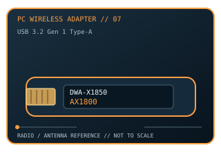

[ MODEL-SPECIFIC PC WI-FI HARDWARE ]
D-Link DWA-X1850 AX1800 Wi-Fi 6 USB Adapter
Dual-band 2×2 Wi-Fi 6 USB 3.2 Gen 1 adapter with integrated antenna system. This record documents the named model and its labeled revision scope; it is not a claim that similarly named variants share identical drivers or radio limits.

IDENTIFICATION: Match the full product name, model label and hardware revision with its manufacturer page before choosing a driver. Regional channel and OS support can vary.
Dedicated wireless specifications
| Cataloged product | D-Link DWA-X1850 AX1800 Wi-Fi 6 USB Adapter |
|---|---|
| Wi-Fi generation / standards | Wi-Fi 6 (IEEE 802.11ax), also supports IEEE 802.11a/n/ac. |
| Radio bands, channels & width | 2.4 GHz and 5 GHz; 20/40 MHz at 2.4 GHz, up to 80 MHz at 5 GHz. Typical U.S. channel examples are 1–11 at 2.4 GHz and 36–165 at 5 GHz; local regulatory, DFS and driver rules determine the active set. |
| Spatial streams / nominal link rates | 2×2 MIMO; up to 574 Mb/s at 2.4 GHz and 1,200 Mb/s at 5 GHz (nominal AX1800 rate class). |
| Host interface | USB 3.2 Gen 1 Type-A; verify a USB 3.x host port for the intended performance. |
| Antenna arrangement | Integrated dual-band antenna system in the USB adapter body; no external antenna connector is specified. |
| Operating-system compatibility | D-Link datasheet lists Windows 10 (32- and 64-bit). Check the DWA-X1850 hardware revision and local support page for later OS drivers before use. |
| Bluetooth | No Bluetooth function. |
| Regulatory channel note | 2.4/5 GHz only; channel availability, especially DFS channels in 5 GHz, depends on jurisdiction, access point and current driver. |
Model-specific installation notes
The datasheet specifies integrated antennas and USB 3.2 Gen 1. Its listed AX1800 PHY figures are theoretical and do not predict real-world throughput.
No external antennas are specified; integrated radiating elements are used. Install only with the correct host connector and driver package; antenna placement, local regulation and access-point capabilities affect operation.
Manufacturer sources
- D-Link DWA-X1850 product informationOfficial manufacturer source for product specifications, revision-specific software, or compatibility requirements.
- D-Link DWA-X1850 A1 datasheet (PDF)Official manufacturer source for product specifications, revision-specific software, or compatibility requirements.
Source pages may describe a hardware family or provide revision-selected downloads. Manufacturer regional restrictions and current OS support take precedence over generic interface fit.